This section will include potential legend composition, playstyle, con strats for different POI's, and rotational strats.
General Guidelines
•With the class update in Season 17, a general rule is that every team needs a Beacon scan (either Ring Console or Map Room Scan) character, a vertical movement character such as Horizon, and a defensive character such as Catalyst.
•If running a comp with a character with a large hitbox such as Caustic or Gibby, a character that can move them around. Examples are Wraith, Valk, or Pathfinder.
•Zone teams favor characters that provide team support to the entire team such as Loba (ammo and loot), Wattson (Shields), or Lifeline (Armor and attachments).
•Majority Edge/Hybrid teams favor characters that provide fighting abilities such as Bangalore (rotational smokes/rolling thunder), Gibby (Bubble/Defensive Bombardment), or Maggie (Riot Drill/Wrecking Ball).
•Characters who do not provide a team fighting ability, team support ability, or team movement ability such as Mirage, Revenant, Octane are not advised to be played.
•Niche characters are those who provide both team and fighting abilities or provide a very different set of abilities such as Fuse, Wraith, and Newcastle. Not bad picks, but hard to work around and better options exist.
•Characters like Vantage, Ash, Ballistic are all "Niche" characters, but vastly outmatched by their counter-parts like Seer, Wraith, Maggie.
Season 18 Meta Comp
Season 18 is currently the least diverse season we will have.
International LAN scrims from 08/09/2023
International LAN scrims from 08/10/2023
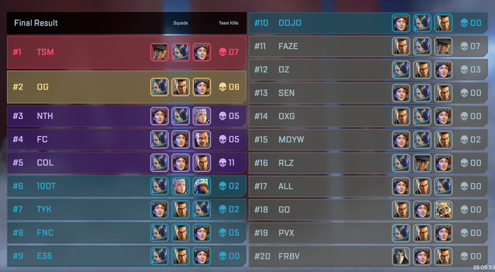
International LAN scrims from 08/11/2023
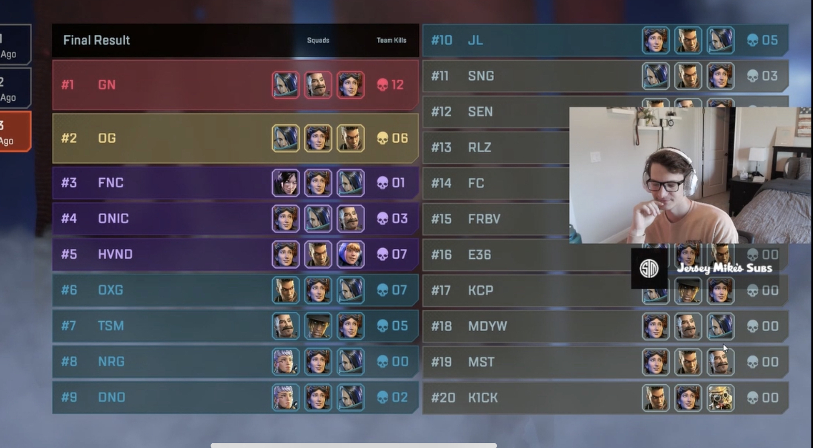
No International LAN scrims from 08/12/2023 or 08/13/2023
International LAN scrims from 08/14/2023
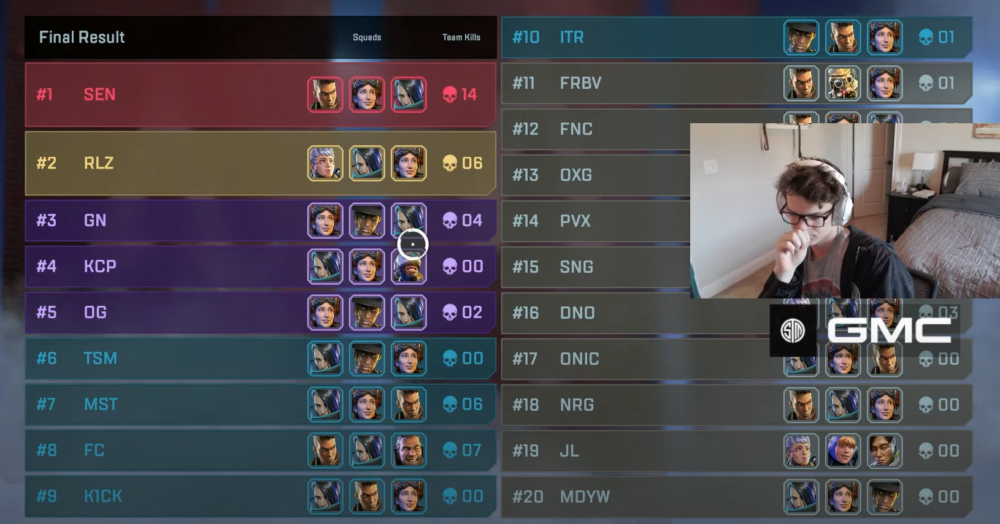
International LAN scrims from 08/15/2023
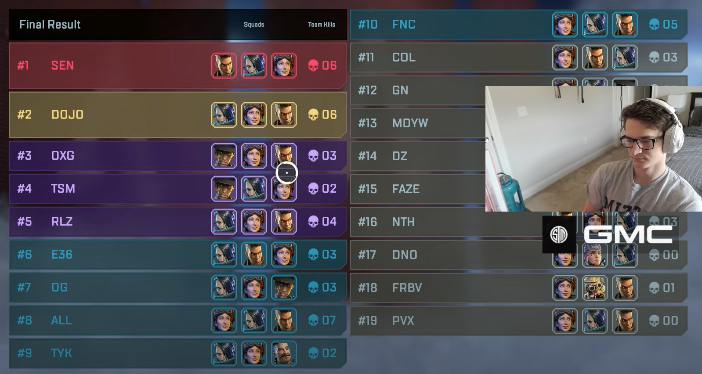
International LAN scrims from 08/16/2023
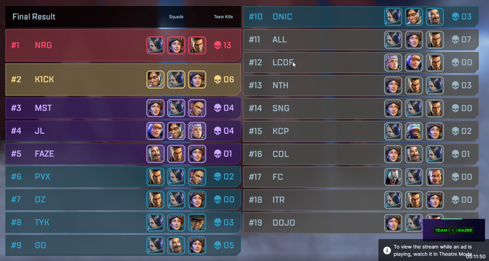
International LAN scrims from 08/17/2023
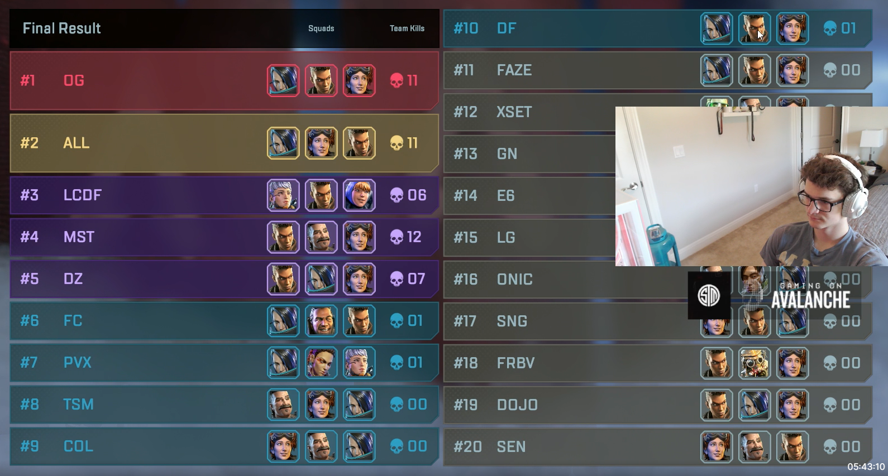
Con Strats
Harvester
Harvester is debatebly one of the worst cons on both maps. A majority of it is dependant on RNG and jumping capabilities.
Known teams to land Siphon are DarkZero, Onic, and Aurora. Harvester is a zone POI, meaning a zone team composition would greatly benefit you, but if you are being conned it is almost IMPOSSIBLE to win the contest with a zone team composition, meaning you are forced to play a hybrid team composition.
Siphon
Known teams to land Siphon are TSM, DarkZero, VeXed, and former Singularity and now Noctem. TSM is undoubtly the best team to land Siphon. With a reportedly 15-9 before Vexed moved spots just before Split 2 LAN (TSM went on to get 2nd overall and Vexed finished bottom 20).
The Con Strat for TSM looks like this: The team will land the main middle building. Hal will land glass and by playing Horizon will get one of the four gun spawns next to double doors. Verhulst and Reps will land top, sharing the middle gun spawn (if there is more than 1) and open the pills with Verhulst locking down the doors with Catalyst Reinforcements.
TSM will not (and no team should) let another team split the POI or take any of the loot from the POI. Siphon itself could be considered 3 POIs and has the most loot of all POIs on BOTH maps.
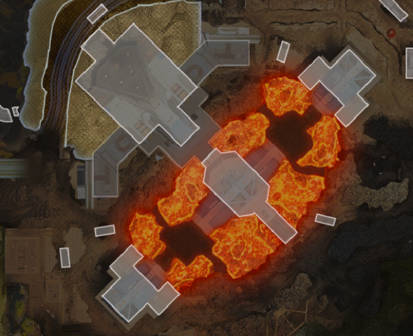
Examples of Siphon Cons
Straight 3v3 Con - Take middle room and brawl.
VeXed goes Command Center - Hal Horzion Lifts up early to take center room.
Monument
Monument has not been in the game for long and has been uncontested.
If Monument isn't being conned and instead the other team has opt'd for Frag East, do not let them loot up. Frag East has subpar loot and a team at Frag East will be at a substantial disadvantage.
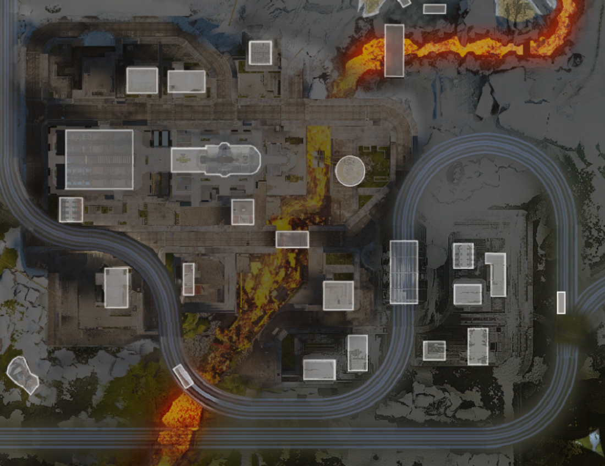
Climatizer
Known teams to land Climatizer are Cloud9, OXG, Riddle, and currently Faze.
Climatizer is split in three sections: left, middle, and right. Climatizer is a POI that SHOULD NOT be 50/50'd unless Survey Camp is looking to 3rd party. If so, 50/50 crafter building by landing on the pills and the top floor. Landing on bottom floor (unless it's the lobby area) is guaranteed to get you cracked or killed.
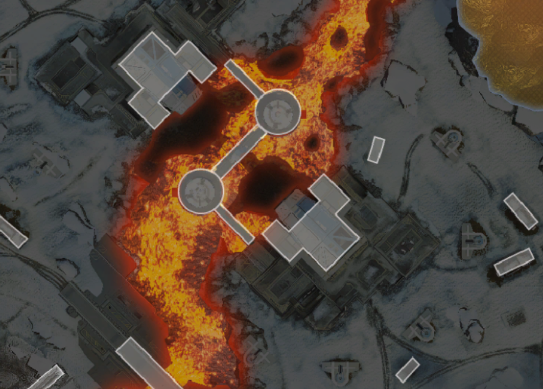
Thermal Station
Known teams to land Thermal Station are Alliance, G2/E8, and Dojo.
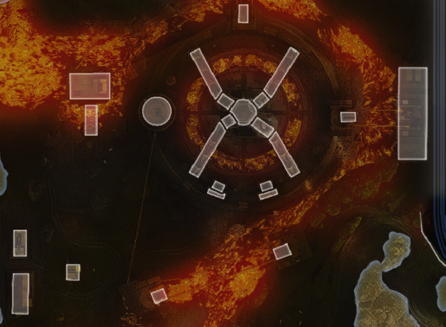
Cascades
Known teams to land Cascades is XSET, Moist, and Onic.
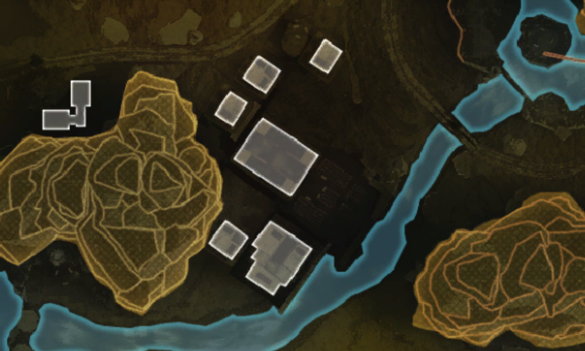
Checkpoint
Known teams to land Checkpoint is NRG and previously Fnatic.
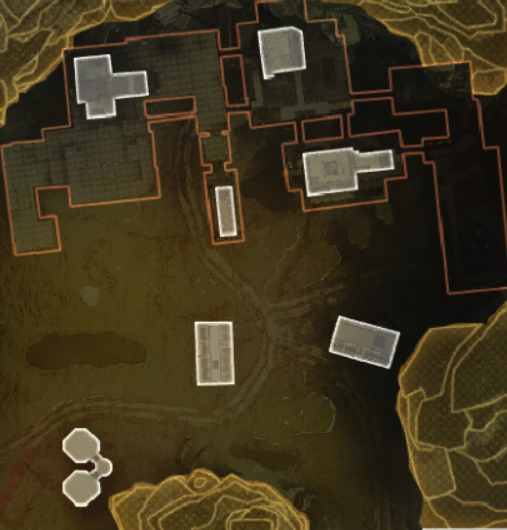
Mill
Known teams to land Mill is Darkzero, KCP, and Optic.